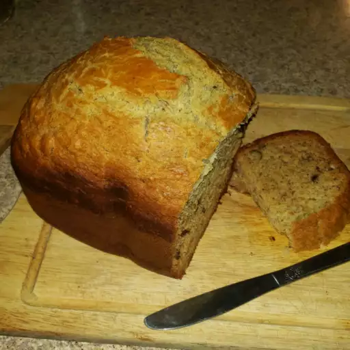

"This bread machine banana nut bread comes out so tender it will melt in your mouth!"
Spray bread machine pan with vegetable oil spray.
Premix ingredients in order listed. Place mixture in bread machine pan.
Select the Quick Bread/Cake cycle. Press Start. Check after 1 minute to see if mixture is well blended.
Cook until cake cycle stops. Remove pan, and cool completely before removing bread from pan.